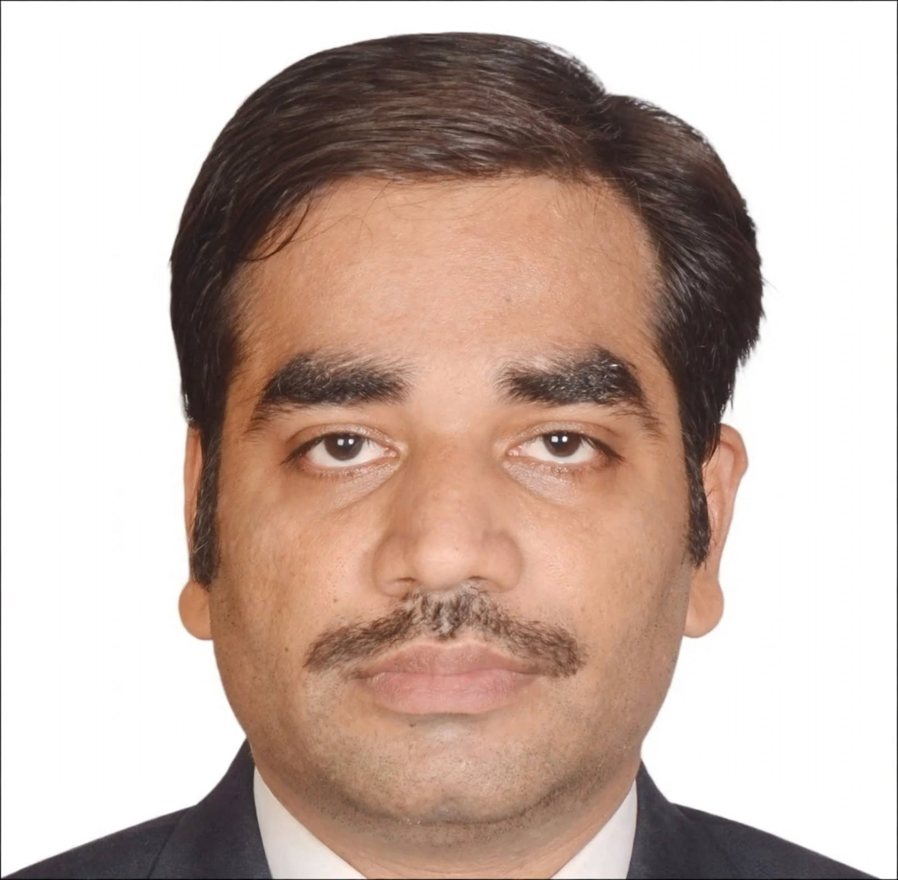

Contact Information
ASSISTANT PROFESSOR | GENERAL
MANAGEMENT | CORPORATE GOVERNANCE &
BUSINESS LAW
ORCID: 0000-0001-7872-3100

18+ Years Academic Experience • Peer-Reviewed Research in ABDC / Scopus Journals • 2 Ph.D.s • International Research Exposure
Research & Resources:
Short answers for the exercises at the end of each chapter may be found here.
Last updated: June 2026